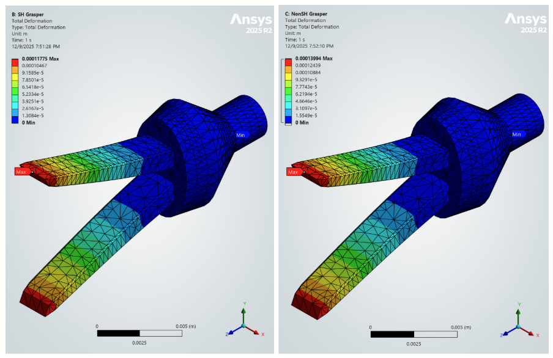

Fang CFD Analysis
Fang CFD Analysis Aug 2024 - Present
Building fluid simulations to explore venom injection mechanisms across snake species. Using Ansys Fluent, rheometry data, and numerical predictions to identify key drivers of fang evolution.
Software: Python, MATLAB, C++, CAD (SOLIDWORKS), CFD (Ansys Fluent), FEA (Ansys Mechanical)
Hardware: Rheometry, SEM, OM, XRD, DSC, DMA, UV-Vis Spectroscopy, Mill/lathe machining, Silicone molding, Microbial culture, Electrical troubleshooting
Fang CFD Analysis Building fluid simulations to explore venom injection mechanisms across snake species. Using Ansys Fluent, rheometry data, and numerical predictions to identify key drivers of fang evolution.
 SAPPHIRE Cell
SAPPHIRE CellLeading project team to build device extracting CO2 from city wastewater. Microbial electrolytic cell aims to use waste materials to capture carbon and produce hydrogen gas.

Microgripper FEADesigned micro-gripper and ran FEA for class project. Incorporated experimental tensile data to strengthen accuracy of model.
 Tail Biomechanics
Tail Biomechanics Categorized functional behavior in mammalian tails for intertial maneuvering research. Involved manual video survey to find repeated behavior across species.
 HASEL Actuators
HASEL ActuatorsDesigned and published findings on geometric parameters for soft biomimetic electrostatic actuators. Involved high-voltage electrical systems, liquid conductors/dielectrics, and iterative design.